Educational stratification meets causal machine learning
(pablo.geraldo@nuffield.ox.ac.uk)
November 10, 2025
Three pillars of my research
Social stratification
- High-quality data, admin records (often restricted)
- Policy-relevant contexts
- Sophisticated methods for robust empirical evidence
Quantitative methods
- Credible causal inference in complex settings
- Machine learning for flexible estimation
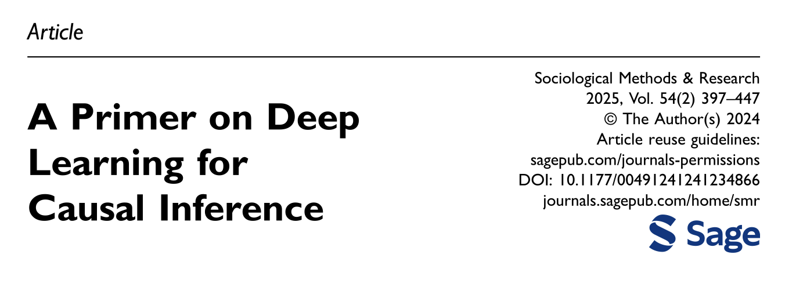
Conceptual clarification
Is there a credibility ladder in research methods?
How to assess empirical evidence with the aid of graphical models
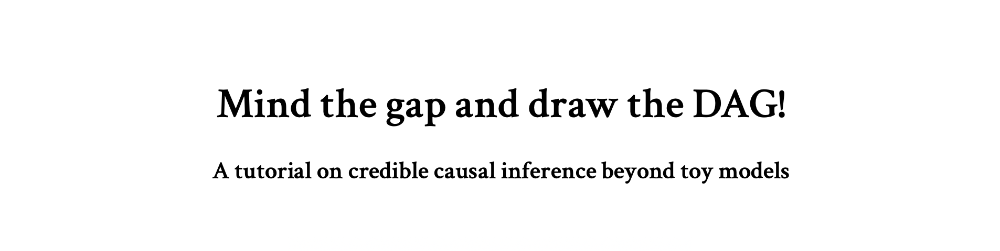
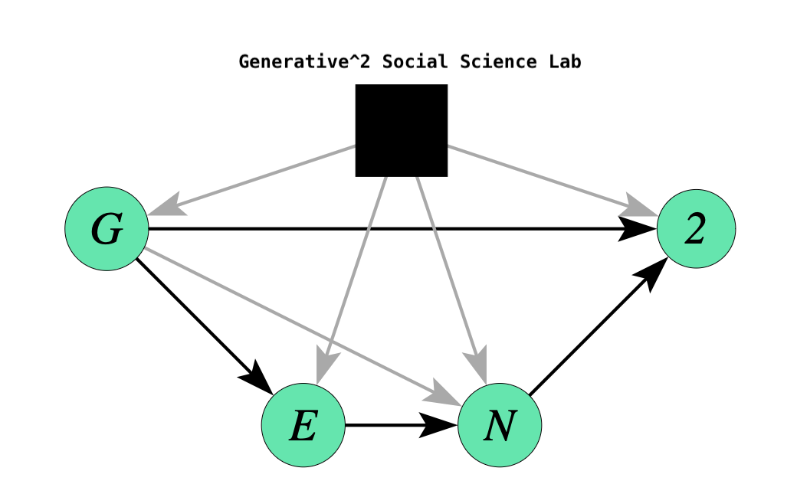
The rise of horizontal stratification
The expansion of compulsory education during the 20th century was accompanied by contrasting expectations:
Equalizing effect on attainment and skills due to enrollment and attendance
Persistent inequality due to constrained decisions and qualitative differences
Between-school tracking is a particularly relevant example of the latter
It has been argues to have detrimental effects both in learning and educational expectations
Its effects are challenging to study due to self-selection!
Illustration: School Tracking in Chile
Institutional context
40% of students attend vocational secondary schools
70% of students wants to follow tertiary education (independent of track)
Around 40% does within 5 years, much less completions
Vocational schools are fewer but bigger, and they specialise
- Few mixed track schools mostly in the state sector
Institutional and curricular mismatch
- Common curriculum in separate institutions!
Institutional context
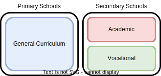
Institutional context

Challenges and opportunities
Main challenge: (maybe) students in general and vocational schools are not comparable!
The case of Chilean school tracking offers several theoretical and practical opportunities, making it a compelling case study:
Institutional/curricular mismatch allow to estimate the effect of attending a vocational school net of curricular differentiation
High-quality administrative and survey data allow for extensive confounding adjustment
- Students followed from 4th to 10th grade
- Parental background, previous performance, previous expectations
Comparatively less selected assignment
- High proportion of students attend vocational schools
Identification strategy
\(\newcommand\indep{\perp\!\!\!\perp}\)
Approach: conduct the study under different identification assumptions to deal with uncertainty about the “true causal model”
- Selection on observables: \(\{Y_0, Y_1\} \indep \text{Vocational} ~\mid \text{ X}\)
Where \(X\) denotes students’, parental and schools observed characteristics. Implemented using regression, matching, weighting, and DoubleML for estimation
- Selection on time-invariant confounders: \(\{Y_0, Y_1\} \indep \text{Vocational} ~\mid \text{ X, U}\)
Where \(U\) denotes students’ characteristics that are unobserved but constant over time. Implemented using difference-in-differences
Identification strategy
- Selection on time-varying confounding
It is possible to deal with observed time-varying confounding using g-methods (Robins et al.), but unobserved time varying confounding is basically impossible to deal with. This is the main weakness of observational causal inference.
There are, however, ways to incorporate at least partially this possibility:
Sensitivity Analysis: How strong should unobserved confounding be to change our study’s conclusions?
Falsification/Placebo Test: Use a placebo outcome that should not be affected by the exposure of interest, but that one would expect to be affected by time-varying unobserved confounding. I used parental income and education at the time the outcome was measured.
Identification strategy
I employ several complementary empirical strategies:
- Selection on observables
Difference-in-difference
Machine learning for heterogeneous effects
Sensitivity and falsification checks
Identification
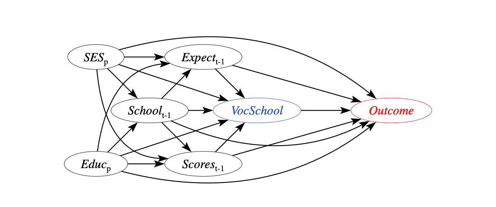
Identification
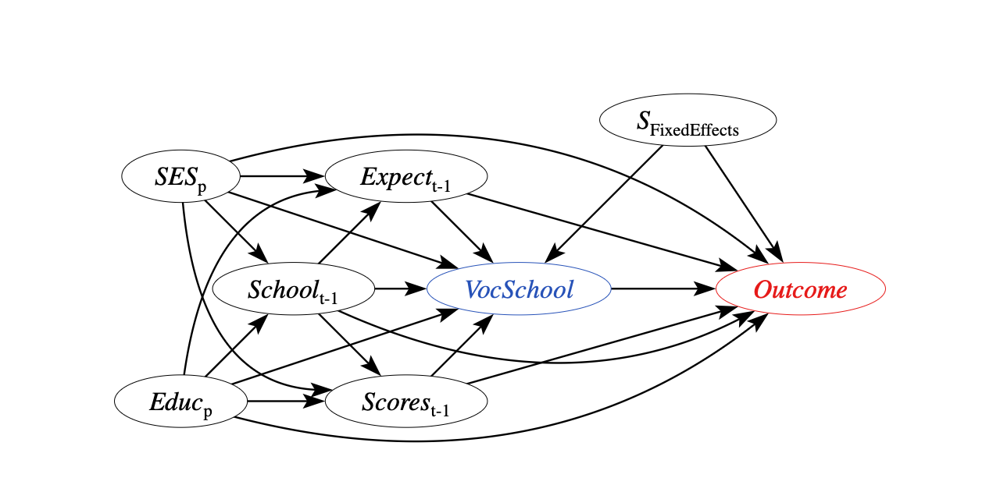
Identification
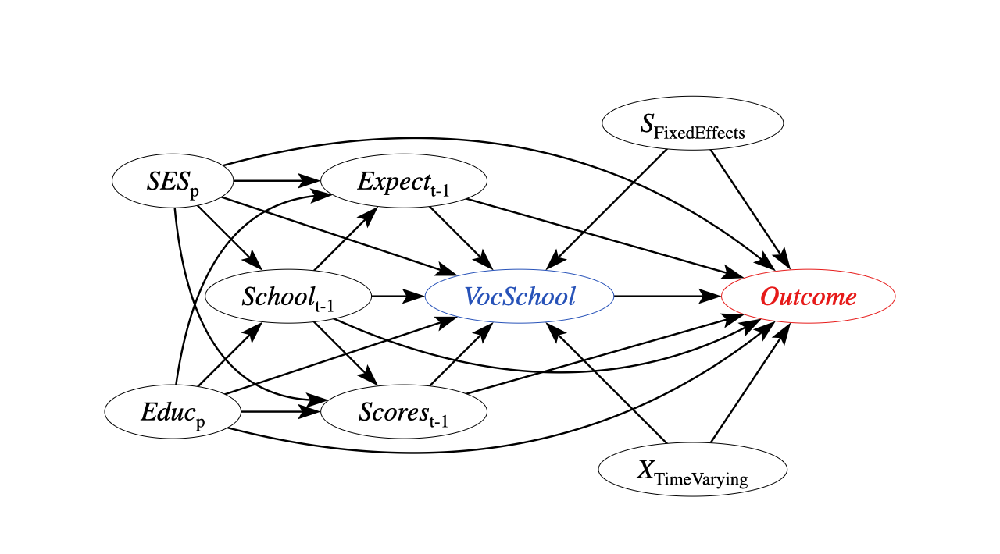
Identification
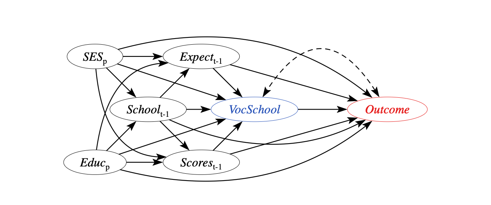
Effects of vocational schools on learning and expectations
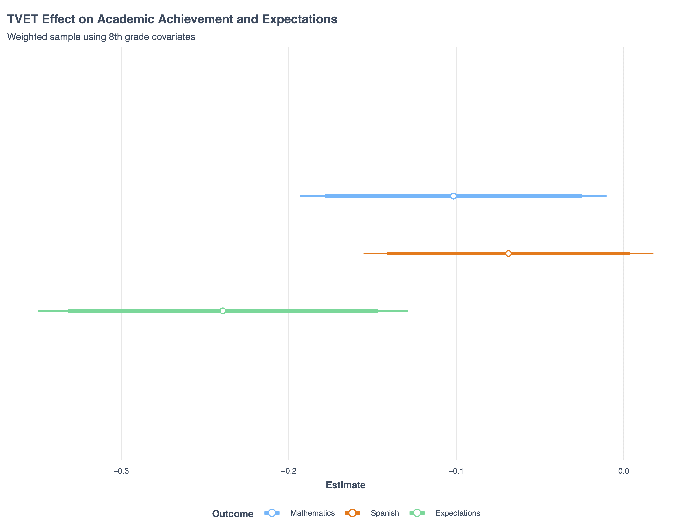
Double ML estimation: PLR
We use machine learning algorithms to estimate two auxiliary models, \(m_0\) and \(g_0\), and specify a partially linear model (PLR) as follows:
\[ D = m_0(X) + V, ~ E[V|X] = 0 \]
\[ Y = D\theta_0 + g_0(X) + \zeta, ~ E[\zeta|D,X] = 0 \]
The assignment mechanism for treatment \(D\) is flexibly estimated based on covariates \(X\)
The outcome model for \(Y\) is flexibly estimated based on covariates \(X\)
Importantly, we assume the treatment effect is not heterogeneous!
Double ML estimation: PLR
We use machine learning algorithms to estimate two auxiliary models, \(m_0\) and \(g_0\), and specify an interactive regression model (IRM) as follows:
\[ D = m_0(X) + V, ~ E[V|X] = 0 \]
\[ Y = g_0(D,X) + U, ~ E[U|D,X] = 0 \]
The assignment mechanism for treatment \(D\) is flexibly estimated based on covariates \(X\)
The outcome model for \(Y\) is flexibly estimated based on covariates \(X\)
Importantly, we allow the treatment effect to be fully heterogeneous!
Vocational schools decrease student math scores
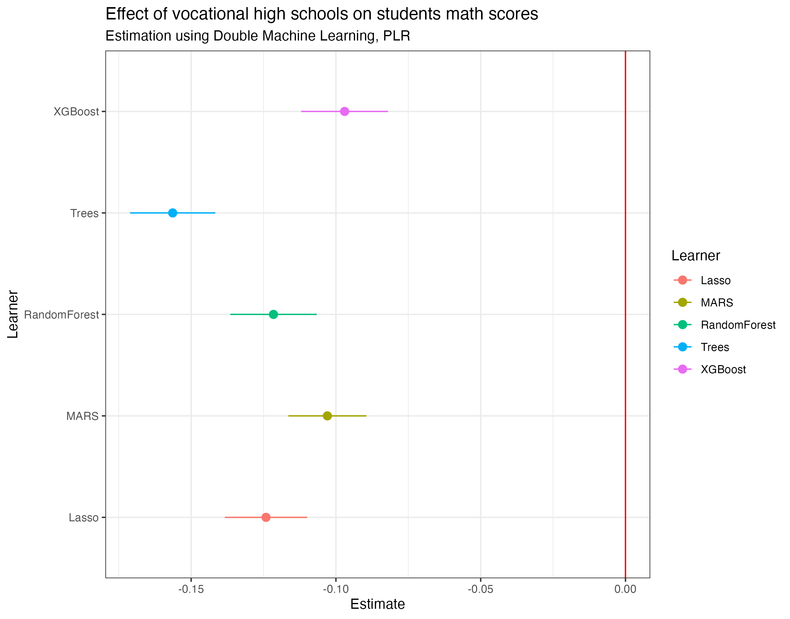
Vocational schools decrease student math scores
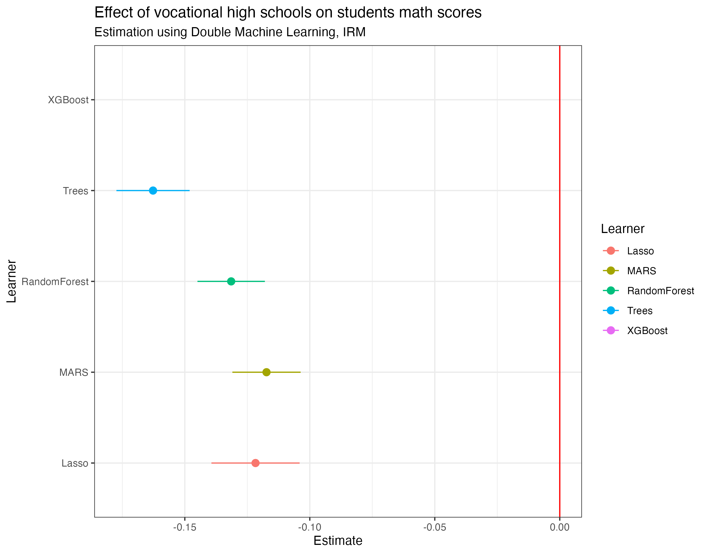
Vocational schools decrease educational expectations
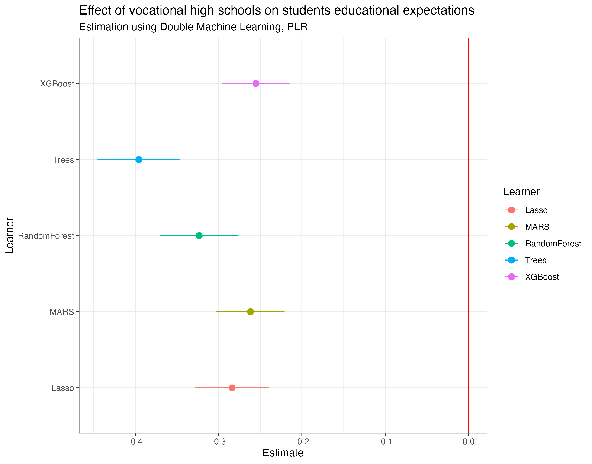
Vocational schools decrease educational expectations

Future research plans
Social stratification
- Grant funding to continue research on tuition-free college in Chile
- Conjoint experiment
- Labour market data
- Comparative focus
- School resources in HK
- HE expansion in Philippines
- Focus on funding reforms and school climate
Quantitative methods
Causal inference without propensity scores
Bridging causal inference and population dynamics
- When treatments impact “potential populations”
Bridging robustness checks and sensitivity analysis
Conceptual clarification
- Multi-agent models: from ABMs to LLMs
- What is the price of “realism” in simulations?
- How does the “generative” in GenAI affect the “generative” in “generative social science”?
- Interpretation issues in Socio-genomics
Thank you!
Balance after optmatch
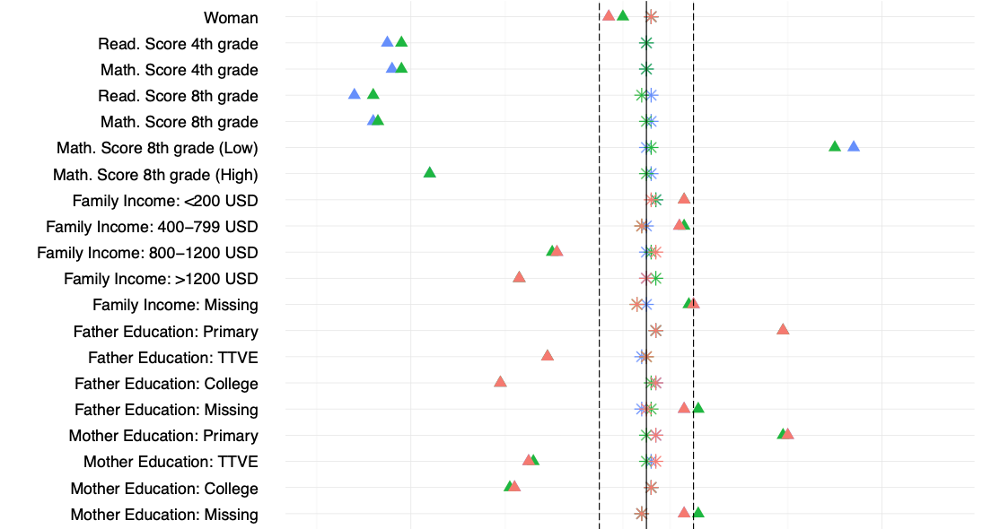
Balance after optmatch
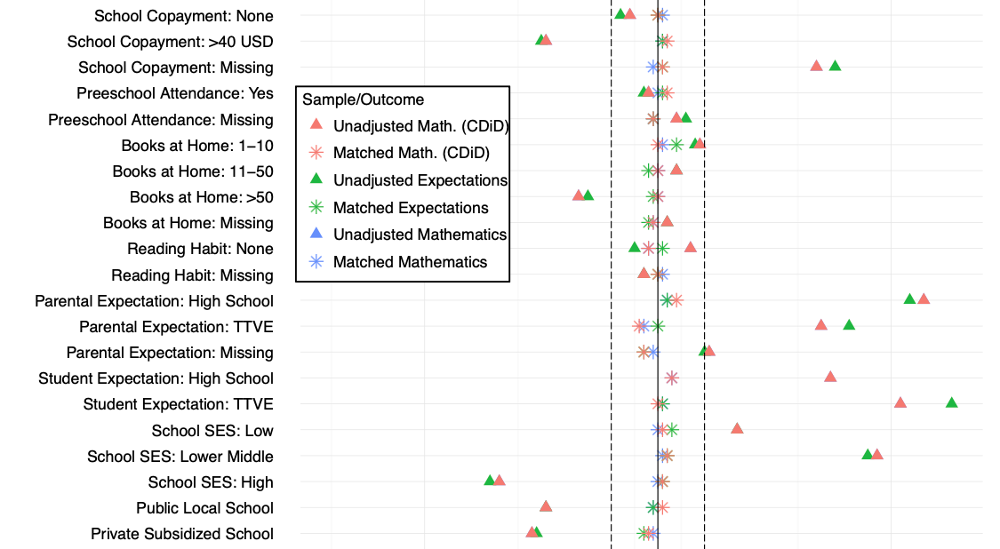
Balance after optmatch
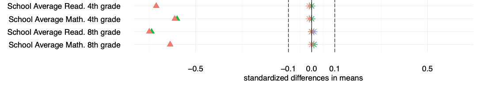
Sensitivity analysis mathematics
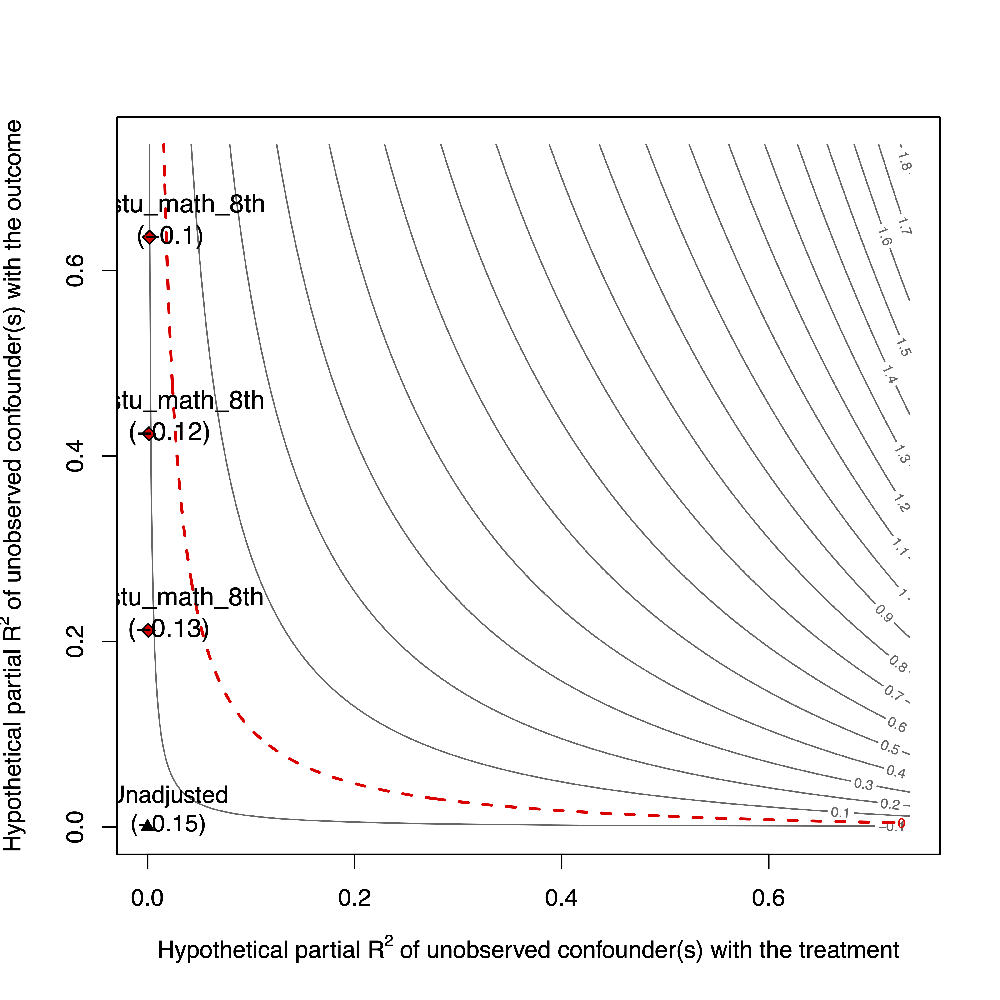
Sensitivity analysis expectations
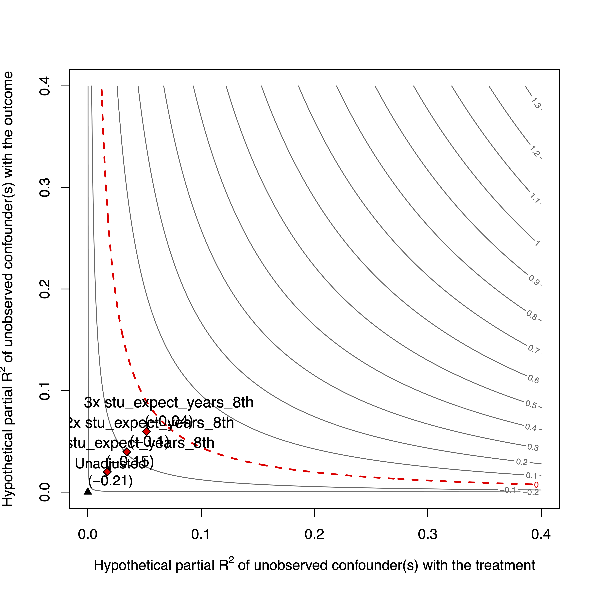